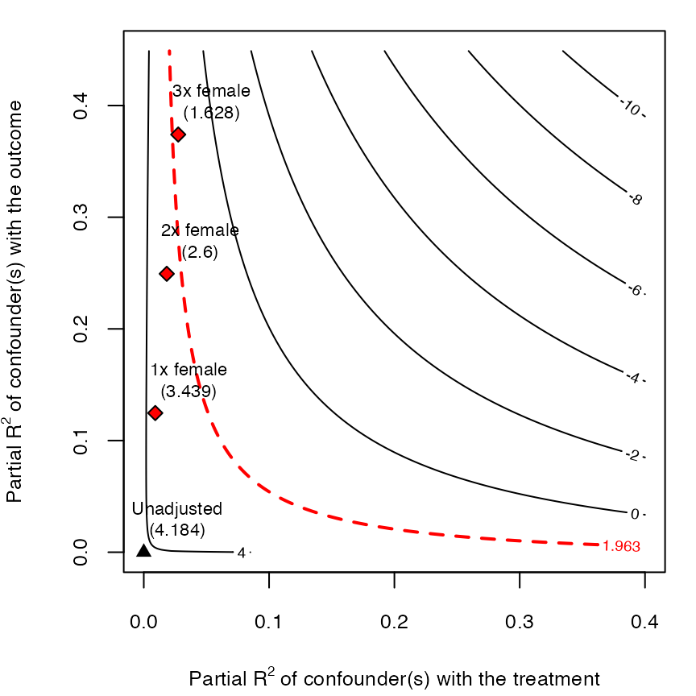

An introduction to sensitivity analysis using sensemakr
Carlos Cinelli and Chad Hazlett
Source:vignettes/sensemakr.Rmd
sensemakr.RmdIntroduction
The most common strategy for making causal inferences with observational data is to adjust for observed covariates while making the untestable assumption that there are no unobserved confounders. Rarely, however, can those assumptions be expected to hold exactly, and debating the absence of unobserved confounding qualitatively only gets us so far. Sensitivity analysis allows us to quantitatively discuss the fragility of putative causal estimates when the underlying assumption of no unobserved confounding is challenged.
The R package sensemakr aims to help with this task, implementing a suite of sensitivity analysis tools that extend the traditional omitted variable bias framework, as developed in Cinelli and Hazlett (2020). The goal of sensemakr is to make it easier to understand the impact that omitted variables would have on a regression result. This allows analysts to investigate the robustness of their estimates to unobserved confounding, answering questions such as:
- How strong would an unobserved confounder (or a group of confounders) have to be to change our research conclusions?
- In a worst-case scenario, how robust are our results to all unobserved confounders acting together, possibly non-linearly?
- How strong would confounding need to be relative to the strength of observed covariates, to change our answer a certain amount?
Violence in Darfur
Given that sensitivity analysis requires contextual knowledge to be properly interpreted, we illustrate the basic functionality of the package with a real example. Here we reproduce the results found in Section 5 of Cinelli and Hazlett (2020), which estimates the effects of exposure to violence on attitudes towards peace, in Darfur. Further details about this application and the data can be found in Hazlett (2019).
The data and research question
In 2003 and 2004, the Darfurian government orchestrated a horrific campaign of violence against civilians, killing an estimated two hundred thousand people. This application asks whether, on average, being directly injured or maimed in this episode made individuals more likely to feel “vengeful” and unwilling to make peace with those who perpetrated this violence. Or, were those who directly suffered from such violence most motivated to see it end by making peace?
The sensemakr package comes with an example dataset drawn from a survey on attitudes of Darfurian refugees in eastern Chad (Hazlett, 2019). The data can be loaded with the command data("darfur").
The “treatment” variable of interest is directlyharmed, which indicates whether the individual was physically injured or maimed during the attack on her or his village in Darfur. The main outcome of interest is peacefactor, an index measuring pro-peace attitudes. Other covariates in the data include: village (a factor variable indicating the original village of the respondent), female (a binary indicator of gender), age (in years), herder_dar (whether they were a herder in Darfur), farmer_dar (whether they were a farmer in Darfur), and past_voted (whether they report having voted in an earlier election, prior to the conflict). For further details, see ?darfur.
The purpose of these attacks was to punish civilians from ethnic groups presumed to support the opposition, and to kill or drive these groups out so as to reduce support for the opposition. Violence against civilians included aerial bombardments by the government as well as ground assaults by the Janjaweed, a pro-government militia. Now suppose a researcher argues that, while some villages were more or less intensively attacked, within village violence was largely indiscriminate. The bombings could not be finely targeted owing to their crudeness, and there were not many reasons to target them. Similarly, the Janjaweed had no reason to target certain individuals rather than others, and no information with which to do so—with one major exception: women were targeted and often subjected to sexual violence.
Given these considerations, this researcher may argue that adjusting for village and female is sufficient for control of confounding, and run the following linear regression model (in which other pre-treatment covariates, although not necessary for identification, are also included):
# runs regression model
darfur.model <- lm(peacefactor ~ directlyharmed + village + female +
age + farmer_dar + herder_dar + pastvoted + hhsize_darfur,
data = darfur)This regression model results in the following estimates:
===============================================
Dependent variable:
---------------------------
peacefactor
-----------------------------------------------
directlyharmed 0.097***
(0.023)
-----------------------------------------------
Observations 1,276
R2 0.512
Adjusted R2 0.205
Residual Std. Error 0.310 (df = 783)
F Statistic 1.667*** (df = 492; 783)
===============================================
Note: *p<0.1; **p<0.05; ***p<0.01According to such a model, those who were directly harmed in violence were on average more “pro-peace”, not less.
The threat of unobserved confounders
The previous estimate requires the assumption of no unobserved confounders for unbiasedness. While supported by the claim that there is no targeting of violence within village-gender strata, not all investigators may agree with this account. For example, one may argue that, athough the bombing was crude, bombs were still more likely to hit the center of the village, and those in the center would also likely hold different attitudes towards peace. One may also argue that the Janjaweed may observe signals that indicate, for example, the wealth of individuals. Or, perhaps, that an individual’s prior political attitudes could have led them to take actions that exposed them to greater risks. To complicate things, all these factors could interact with each other or otherwise have non-linear effects.
These concerns suggest that, instead of the previous linear model (darfur.model), we should have run a model such as
darfur.complete.model <- lm(peacefactor ~ directlyharmed + village + female +
age + farmer_dar + herder_dar + pastvoted + hhsize_darfur +
center*wealth*political_attitudes,
data = darfur)where center*wealth*political_attitudes is the R formula for including fully interacted terms for these three variables. But trying to fit the model darfur.complete.model will result in an error: none of the variables center, wealth or political_attitudes were measured. We can nevertheless ask questions such as “how strong would these unobserved confounders (or all reamaining unobserved confounders) need to be to change our previous conclusions?” Or, more precisely, given an assumption on how strongly these and other omitted variables relate to the treatment and the outcome, how would including them have changed our inferences regarding the coefficient of directlyharmed?
Additionally, we have domain knowledge regarding the main determinants of exposure to violence, such as the special role of gender in targeting. This knowledge may be used to either aid in interpretation of the magnitude of confounding required, or to impose limits upon the strength of unobserved confounding. For instance, even if variables such as wealth remained as confounders, one could argue that it is unreasonable to expect that they explain more of the variation of exposure to violence than does gender. We show how sensemakr can leverage such claims to bound the plausible strength of unobserved variables.
Sensitivity Analysis
The main function of the package is sensemakr(). This function performs the most commonly required sensitivity analyses, which can then be further explored with the print, summary and plot methods (see details in ?print.sensemakr and ?plot.sensemakr). We begin the analysis by applying sensemakr to the original regression model, darfur.model:
# runs sensemakr for sensitivity analysis
# in the darfur example
darfur.sensitivity <- sensemakr(model = darfur.model,
treatment = "directlyharmed",
benchmark_covariates = "female",
kd = 1:3,
ky = 1:3,
q = 1,
alpha = 0.05,
reduce = TRUE)The arguments are:
model: the
lmobject with the outcome regression. In our case,darfur.model.treatment: the name of the treatment variable. In our case,
"directlyharmed".benchmark_covariates: the names of covariates that will be used to bound the plausible strength of the unobserved confounders. Here, we put
"female", which we argue to be among the main determinants of exposure to violence and find to be a strong determinant of attitudes towards peace.kd and ky: these arguments parameterize how many times stronger the confounder is related to the treatment (
kd) and to the outcome (ky) in comparison to the observed benchmark covariate (female). In our example, settingkd = 1:3andky = 1:3means we want to investigate the maximum strength of a confounder once, twice, or three times as strong as female (in explaining treatment and outcome variation). If onlykdis given,kywill be set equal to it by default.q: this allows the user to specify what fraction of the effect estimate would have to be explained away to be problematic. Setting
q = 1, as we do here, means that a reduction of 100% of the current effect estimate, that is, a true effect of zero, would be deemed problematic. The default is 1.alpha: significance level of interest for making statistical inferences. The default is 0.05.
reduce: should we consider confounders acting towards increasing or reducing the absolute value of the estimate? The default is
reduce = TRUE, which means we are considering confounders that pull the estimate towards (or through) zero.
Using the default arguments, one can simplify the previous call to:
darfur.sensitivity <- sensemakr(model = darfur.model,
treatment = "directlyharmed",
benchmark_covariates = "female",
kd = 1:3)After running sensemakr(), we can now explore the sensitivity analysis results.
Minimal sensitivity reporting
The print method of sensemakr provides a quick review of the original (unadjusted) estimate along with three summary sensitivity statistics suited for routine reporting: the partial \(R^2\) of the treatment with the outcome, the robustnuess value (RV) required to reduce the estimate entirely to zero (i.e. \(q=1\)), and the RV beyond which the estimate would no longer be statistically distinguishable from zero at the 0.05 level (\(q=1\), \(\alpha=0.05\)).
darfur.sensitivity
#> Sensitivity Analysis to Unobserved Confounding
#>
#> Model Formula: peacefactor ~ directlyharmed + village + female + age + farmer_dar +
#> herder_dar + pastvoted + hhsize_darfur
#>
#> Null hypothesis: q = 1 and reduce = TRUE
#>
#> Unadjusted Estimates of ' directlyharmed ':
#> Coef. estimate: 0.09732
#> Standard Error: 0.02326
#> t-value: 4.18445
#>
#> Sensitivity Statistics:
#> Partial R2 of treatment with outcome: 0.02187
#> Robustness Value, q = 1 : 0.13878
#> Robustness Value, q = 1 alpha = 0.05 : 0.07626
#>
#> For more information, check summary.The package also provides a function that creates a latex or html table with these results, as shown below (for the latex table, simply change the argument to format = "latex").
ovb_minimal_reporting(darfur.sensitivity, format = "html")| Outcome: peacefactor | ||||||
|---|---|---|---|---|---|---|
| Treatment | Est. | S.E. | t-value | \(R^2_{Y \sim D |{\bf X}}\) | \(RV_{q = 1}\) | \(RV_{q = 1, \alpha = 0.05}\) |
| directlyharmed | 0.097 | 0.023 | 4.184 | 2.2% | 13.9% | 7.6% |
| Note: df = 783; Bound ( 1x female ): \(R^2_{Y\sim Z| {\bf X}, D}\) = 12.5%, \(R^2_{D\sim Z| {\bf X} }\) = 0.9% | ||||||
These three sensitivity statistics provide a minimal reporting for sensitivity analysis. More precisely:
The robustness value for bringing the point estimate of
directlyharmedexactly to zero (\(RV_{q=1}\)) is 13.9% . This means that unobserved confounders that explain 13.9% of the residual variance both of the treatment and of the outcome are sufficiently strong to explain away all the observed effect. On the other hand, unobserved confounders that do not explain at least 13.9% of the residual variance both of the treatment and of the outcome are not sufficiently strong to do so.The robustness value for testing the null hypothesis that the coefficient of
directlyharmedis zero \((RV_{q =1, \alpha = 0.05})\) falls to 7.6%. This means that unobserved confounders that explain 7.6% of the residual variance both of the treatment and of the outcome are sufficiently strong to bring the lower bound of the confidence interval to zero (at the chosen significance level of 5%). On the other hand, unobserved confounders that do not explain at least 7.6% of the residual variance both of the treatment and of the outcome are not sufficiently strong to do so.Finally, the partial \(R^2\) of
directlyharmedwithpeacefactormeans that, in an extreme scenario, in which we assume that unobserved confounders explain all of the left out variance of the outcome, these unobserved confounders would need to explain at least 2.2% of the residual variance of the treatment to fully explain away the observed effect.
These are useful quantities that summarize what we need to know in order to safely rule out confounders that are deemed to be problematic. Interpreting these values requires domain knowledge about the data generating process. Therefore, we encourage researchers to argue about what are plausible bounds on the maximum explanatory power that unobserved confounders could have in a given application.
Sometimes researchers may have a hard time making judgments regarding the absolute strength of a confounder, but may have grounds to make relative claims, for instance, by arguing that unobserved confounders are likely not multiple times stronger than a certain observed covariate. In our application, this is indeed the case. One could argue that, given the nature of the attacks, it is hard to imagine that unobserved confounding could explain much more of targetting than what was explained by the observed variable female.
The lower corner of the table, thus, provides bounds on confounding as strong as female, \(R^2_{Y\sim Z| {\bf X}, D}\) = 12.5%, and \(R^2_{D\sim Z| {\bf X} }\) = 0.9%. Since both of those are below the RV, the table reveals that confounders as strong as female are not sufficient to explain away the observed estimate.
Moreover, the bound on \(R^2_{D\sim Z| {\bf X} }\) is below the partial \(R^2\) of the treatment with the outcome, \(R^2_{Y \sim D |{\bf X}}\). This means that even an extreme confounder explaining all residual variation of the outcome and as strongly associated with the treatment as female would not be able to overturn the research conclusions.
These results are exact for a single unobserved confounder, and conservative for multiple confounders, possibly acting non-linearly. Finally, the summary method for sensemakr provides an extensive report with verbal descriptions of all these analyses. Here, for instance, entering summary(darfur.sensitivity) produces verbose output similar to the text explanations in the last several paragraphs, so that researchers can directly cite or include such text in their reports.
Sensitivity contour plots of point estimates and t-values
The previous sensitivity table provides a good summary of how robust the current estimate is to unobserved confounding. However, researchers may be willing to refine their analysis by visually exploring the whole range of possible estimates that confounders with different strengths could cause. For these, one can use the plot method for sensemakr.
We begin by examining the default plot type, contour plots for the point estimate.
plot(darfur.sensitivity)
The horizontal axis shows the hypothetical residual share of variation of the treatment that unobserved confouding explains, \(R^2_{D\sim Z| {\bf X} }\). The vertical axis shows the hypothetical partial \(R^2\) of unobserved confouding with the outcome, \(R^2_{Y\sim Z| {\bf X}, D}\). The contours show what would be the estimate for directlyharmed that one would have obtained in the full regression model including unobserved confounders with such hypothetical strengths. Note the plot is parameterized in way that hurts our preferred hypothesis, by pulling the estimate towards zero—the direction of the bias was set in the argument reduce = TRUE of sensemakr().
The bounds on the strength of confouding, determined by the parameter kd = 1:3 in the call for sensemakr(), are also shown in the plot. Note that the plot reveals that the direction of the effect (positive) is robust to confounding once, twice or even three times as strong as the observed covariate female, although in this last case the magnitude of the effect is reduced to a third of the original estimate.
We now examine the sensitivity of the t-value for testing the null hypothesis of zero effect. For this, it suffices to change the option sensitivity.of = "t-value".
plot(darfur.sensitivity, sensitivity.of = "t-value")
The plot reveals that, at the 5% significance level, the null hypothesis of zero effect would still be rejected given confounders once or twice as strong as female. However, by contrast to the point-estimate, accounting for sampling uncertainty now means that the null hypothesis of zero effect would not be rejected with the inclusion of a confounder three times as strong as female.
Sensitivity plots of extreme scenarios
Sometimes researchers may be better equipped to make plausibility judgments about the strength of determinants of the treatment assignment mechanism, and have less knowledge about the determinants of the outcome. In those cases, sensitivity plots using extreme scenarios are a useful option. These are produced with the option type = extreme. Here one assumes confounding explains all or some large fraction of the residual variance of the outcome, then vary how strongly such confounding is hypothetically related to the treatment, to see how this affects the resulting point estimate.
plot(darfur.sensitivity, type = "extreme")The default option for the extreme scenarios is r2yz.dx = c(1, .75, .5), which sets the association of confounders with the outcome to \(R^2_{Y\sim Z| {\bf X}, D}\)=100%, \(R^2_{Y\sim Z| {\bf X}, D}\)=75% and \(R^2_{Y\sim Z| {\bf X}, D}\)=50% (producing three separate curves). The bounds on the strength of association of a confounder once, twice or three times as strongly associated with the treatment as female are shown as red ticks in the horizonal axis. As the plot shows, even in the most extreme case of \(R^2_{Y\sim Z| {\bf X}, D}\)=100%, confounders would need to be more than twice as strongly associated with the treatment to fully explain away the point estimate. Moving to the scenarios \(R^2_{Y\sim Z| {\bf X}, D}\)=75% and \(R^2_{Y\sim Z| {\bf X}, D}\)=50%, confounders would need to be more than three times as strongly associated with the treatment as was female in order to fully explain away the point estimate.
A disciplined discussion about confounding
Having demonstrated the basic functionality of the package, here we recall some important caveats on intepretation that apply to any sensitivity analyses.
The results computed by sensemakr() tell us what we need to be prepared to believe in order to sustain that a given conclusion is not due to confounding. In particular, the results of the sensitivity analysis performed here show that, to explain all the observed estimated effect, even in a worst case scenario where the unobserved confounder explains all residual variation of the outcome, this unobserved confounder would need to be more than twice as strongly associated with the treatment as the covariate female. This is a true quantitative statement that describes the strength of confounding needed to overturn the research conclusions.
The analysis, however, says nothing about whether such a confounder does or does not exist. The role of sensitivity analysis is, therefore, to discipline the discussion regarding the causal interpretation of the effect estimate. In particular,
A causal interpretation of the estimate may be defended by articulating that a confounder with such strength is unlikely. For instance, one could argue that, given the way injuries (the “treatment”) occurred, the scope for targeting particular types of individuals was quite limited; aircraft dropped makeshift and unguided bombs and other objects over villages, and militia raided without concern for who they are targeting—the only known major exception to this was targeting gender, which is one of the most visually apparent characteristics of an individual, and was a strong factor in targetting.
Likewise, similar grounds are required to persuasively dismiss a causal interpretation of the estimate. There are standards of (relative) strength that the hypothesized unobserved confounders need to meet in order to be problematic. For instance, a skeptic has to articulate (using domain knowledge) why a confounder that explains at least more than twice of the variation of the treatment assignment than the covariate
femaleis plausible. Otherwise, that confounder cannot logically account for all the observed association, even in an extreme scenario.
Robustness in the face of confouding is thus claimed to the extent one agrees with the arguments in 1 (which rely on domain knowledge about attacks in Darfur), while a result can be deemed fragile insofar as alternative stories meeting the requirements in 2 can be offered. Sensitivity analyses should not be used to obviate discussions about confouding by engaging in automatic procedures; rather, they should stimulate a more displined, quantitative argument about confounding, in which such statements are made and properly debated.
Going further
The basic functionality demonstrated here will likely suffice for most users, most of the time. Sometimes, however, more flexibility will be needed in a given project. When this happens, researchers may resort directly to other sensitivity functions of the package to customize their sensitivity analysis. Those functions can be found in the documentation, and we also provide some examples of those types of analyses next.
References
Cinelli, C. Hazlett, C. (2020) “Making Sense of Sensitivity: Extending Omitted Variable Bias”. Journal of the Royal Statistical Society, Series B (Statistical Methodology). ( link )
Hazlett, C. (2019). Angry or Weary? How Violence Impacts Attitudes toward Peace among Darfurian Refugees. Journal of Conflict Resolution.( link )